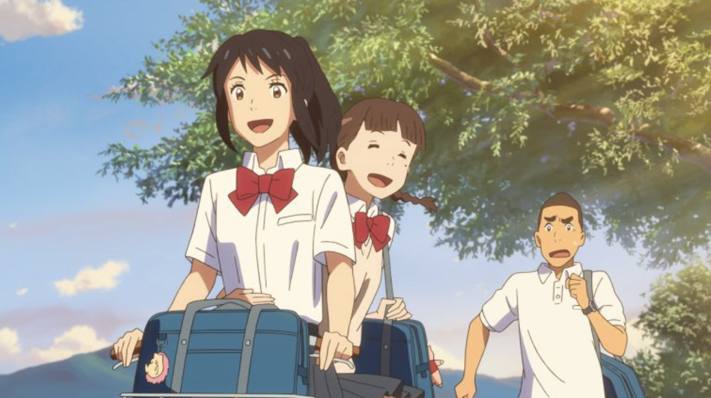

About Mitchuha
너의이름은 여주인공
산 깊은 시골 마을에 사는 여고생. 정장인 아버지는 집을 나가 초등학생인 여동생, 할머니와 셋이서 산다. 성격은 솔직하지만 가계인 신사의 풍습과 아버지 선거 운동 등에 싫증을 느낀다. 친구들과 좁고 작은 마을을 아쉬워하며 도쿄의 화려한 생활을 동경한다.
미츠하
Mitchuha's Character
- 남의 시선을 신경 쓰고 있으며, 구설수에 오르고 주목받는 것을 두려워한다.
- 여느 10대 소녀와 다르지 않은 감성을 가지고 있는 평범한 소녀의 모습도 보이는데, 따분한 생활에서 벗어나 얼른 도쿄에 가보고 싶어 한다.
- 무녀 일부터 마을사람들의 주목까지 평범한 사춘기 여고생이 감당하기엔 굉장히 무거운 짐이지만, 미츠하는 묵묵히 받아들이는 모습을 보여준다.
Mitchuha's Friends
미츠하에게는 서로의 몸을 공유했던 타키, 같은학교 친구들, 그리고 할머니, 여동생, 아버지가 있다.
